Overview
For this project, I wanted to experiment with converting a triangulated model(mesh) into a grid of 3d pixels(voxels).
I want this project to be a system where a model can be imported, and a set of lego-like building instructions can be generated.
To do this, the mesh is first scaled into the build volume and translated onto the bed.
Then, its bounding box is found, and the size given by the sliders determines the grid spacing.
To determine if a voxel is "inside" the mesh, a ray-polyhedra algorithm is used.
Imagine if in 2d I cast a ray in any direction:
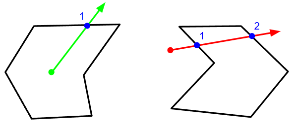
Then, counting the number of ray-segment intersections:
An
odd number means the point must be
inside the polygon, while an even number means the point is outside.
This algorithm is extended to 3d by checking against triangles instead of segments.
Since this needs to be done for every voxel, and each ray needs to check every triangle of the mesh, it is quite slow.
To optimize this in the future, I plan to implement a bounding volume hierarchy(BVH).
These voxels are then "combined" along the xz-plane so as to construct prisms.
This is done using a
greedy meshing.
The prioritized "greedier-dimension" is flipped between x and z every other layer.
This is like how bricks are laid; it makes the final build/stacking more stable.
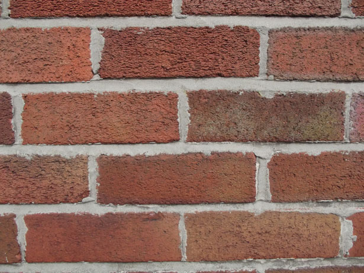
Notice that the initial sizes given represent the real life size of a lego block.
Also, block sizes are constrained to the standard lego brick sizes
(think 1x4, 2x2, 2x4, 1x6, etc.).
This way each vertical slice has its own set of blocks that could be stacked on top of the pervious layer.
Gallery
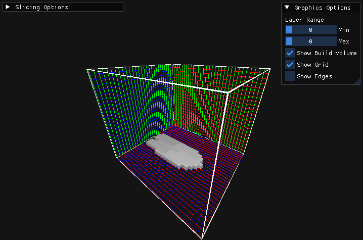
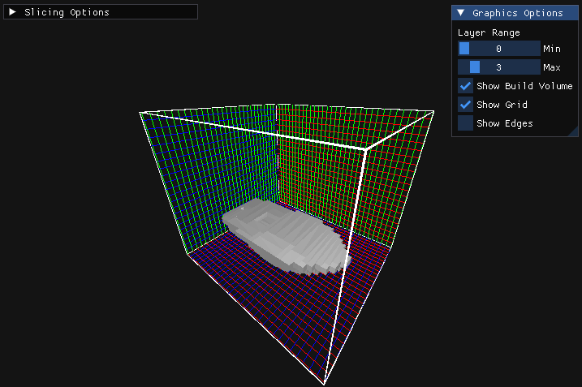
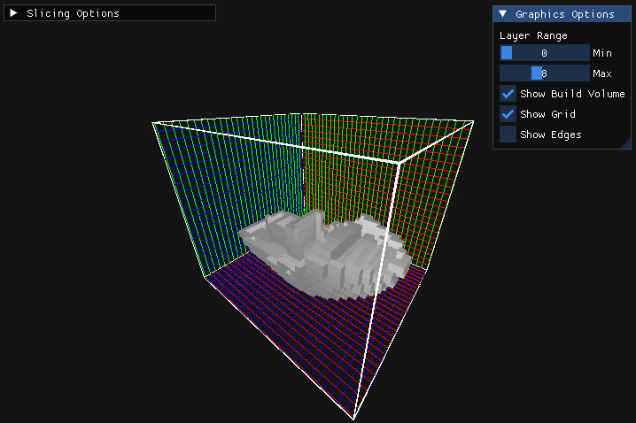
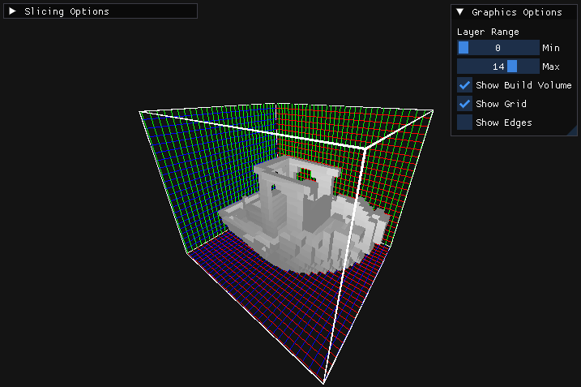
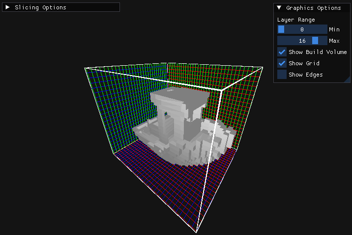
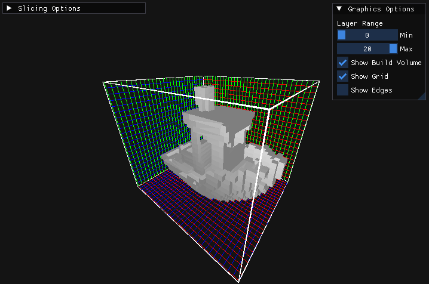
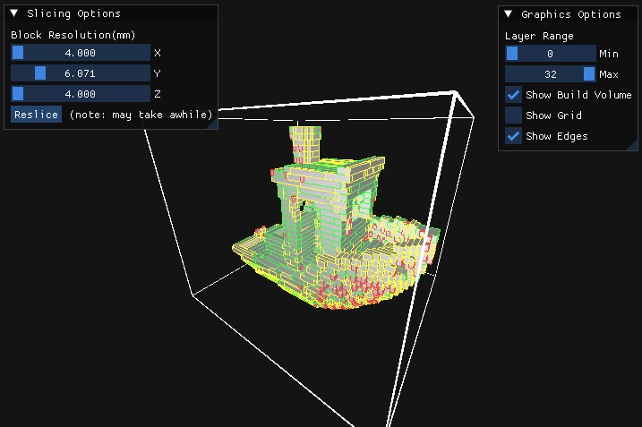
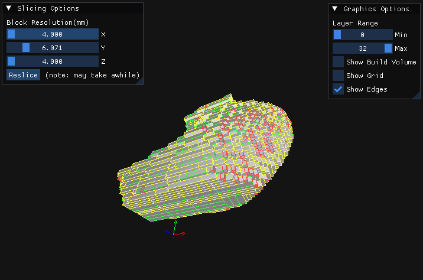
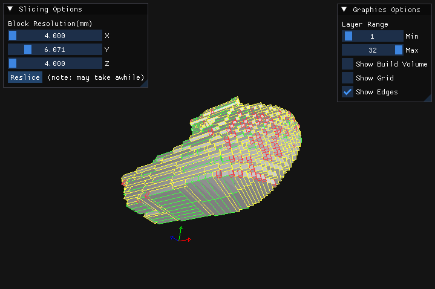
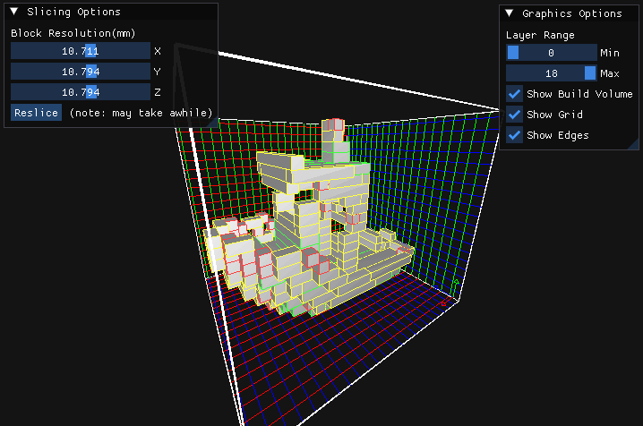
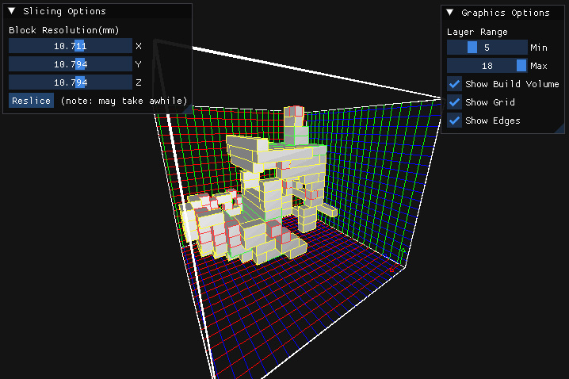
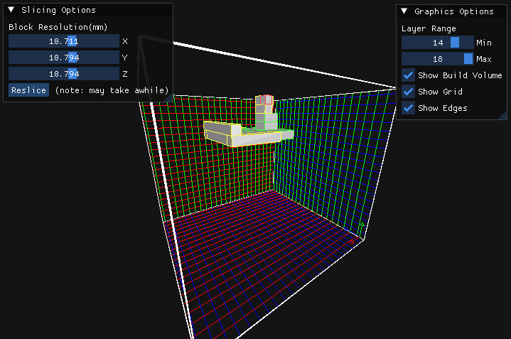